| 首页 | 罪人 | 人格 | E.G.O |
| 《Limbus Company》（中文名：边狱巴士公司，以下简称边狱巴士）是由韩国游戏公司月亮计划开发的回合制游戏，于2023年2月27日发行。游戏中玩家扮演公司管理者，带领多名角色乘坐巴士，在都市各地的脑叶公司支部中寻找并回收“金枝”。 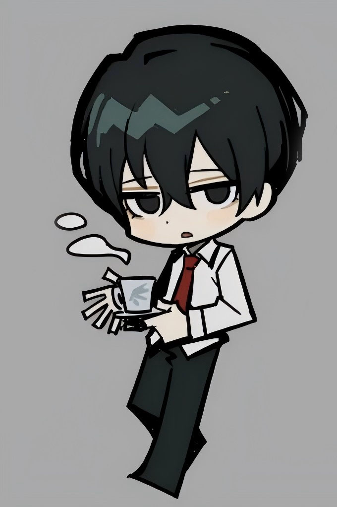 |
| 《边狱巴士》的故事发生在脑叶公司崩毁之后的世界。脑叶公司曾是一个利用异想体生产脑啡肽的神秘组织，但在“白夜与黑昼”事件后，其总部化为废墟，仅部分支部相对完整地保存下来。玩家将扮演边狱巴士公司的管理者，带领12名有着不同罪行与背景的罪人，乘坐巴士穿梭于都市各地的脑叶公司支部，寻找并回收名为“金枝”的重要物质，同时还需收集异想体生产的脑啡肽作为清洁能源，以及回收E.G.O装备等，在这一过程中，逐步揭开游戏世界背后隐藏的真相。 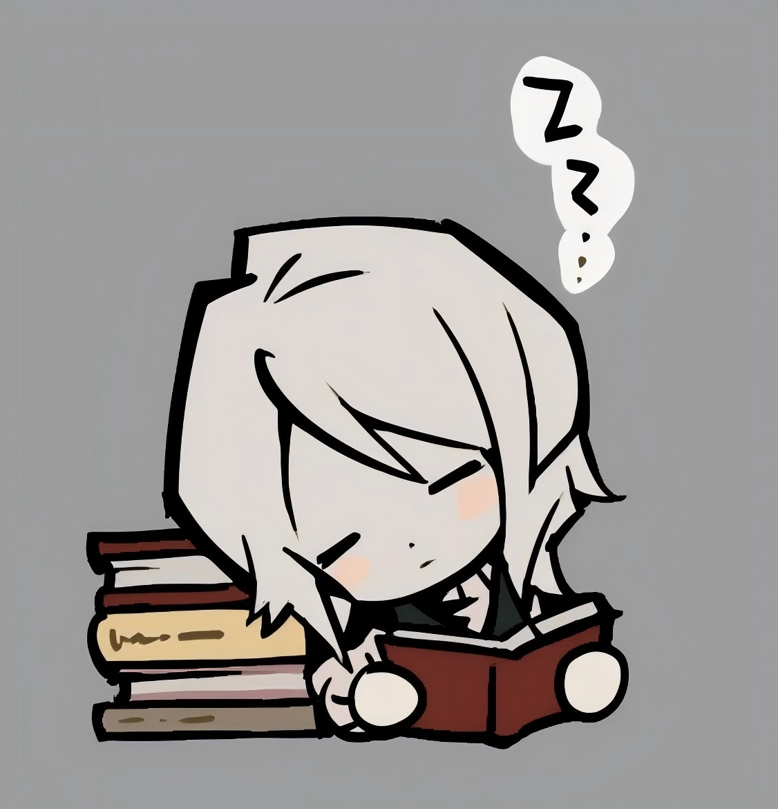 |
| “罪人”是《边狱巴士》中边狱公司巴士部门（LCB）的12名核心战斗员工集体代称。他们在经理但丁与向导维吉尔带领下，乘巴士“梅菲斯特”穿梭都市，执行回收“金枝”等危险任务。罪人与但丁契约绑定：死后可由但丁倒转头部时钟复活，但但丁须承受其死亡痛苦。他们本质是被公司支配的“囚徒士兵”，选择有限，各自背负过去，借任务寻求赎罪或答案。成员原型均取自世界文学名著，构成特殊文学群像。 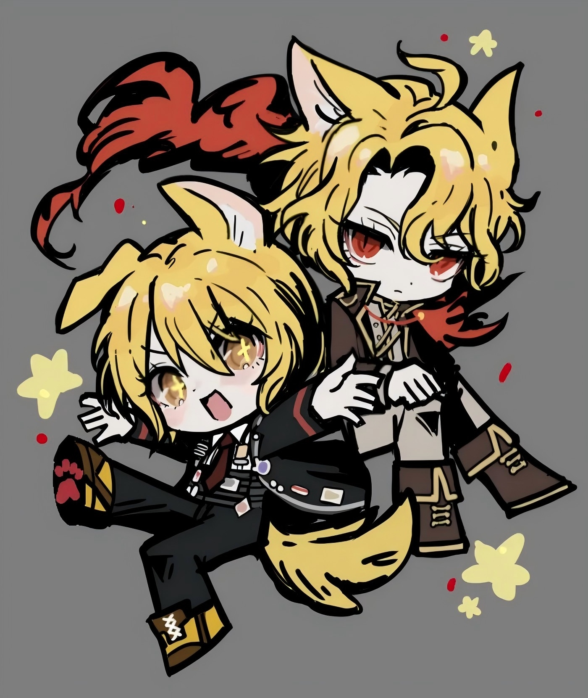 |
| 人格是《边狱巴士》中的基本机制，类似于RPG游戏中的角色。游戏剧情中，但丁从引擎中抽取人格卡和E.G.O并装备在终端上，进入战斗时，被插入凹槽的人格卡和E.G.O就会反映到罪人们身上。提取的范围为罪人们从过去到未来的3年之内，但这一范围会在瓦尔普吉斯之夜发生时变为10年。说不定范围还会扩大到比这更大的区间。 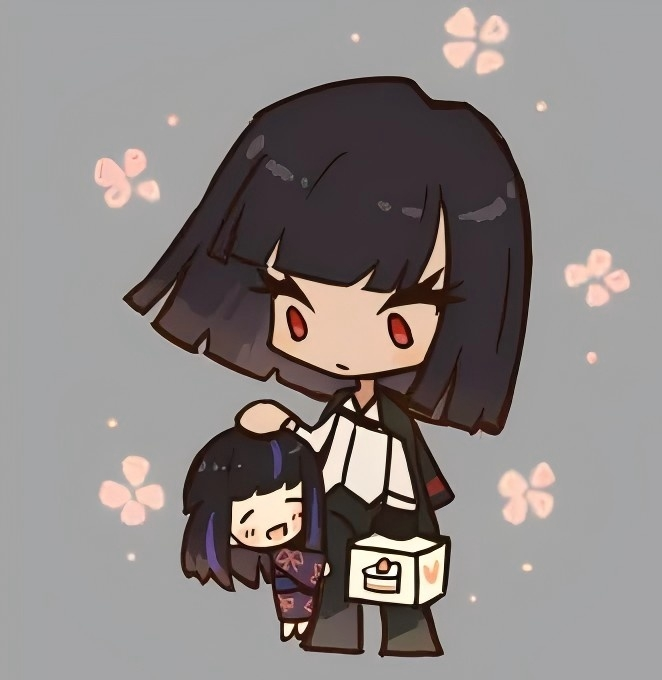 |
| 在《边狱巴士》中，E.G.O是罪人装备的特殊技能。它源于异想体，本质是情感与精神的具象化装备，使用者可能受其影响。游戏中，E.G.O分为ZAYIN、TETH、HE、WAW、ALEPH五个等级，每场战斗每个等级只能装备一个。释放需消耗战斗中积累的E.G.O资源与理智值，拥有比普通技能更高的收益。若在低理智下强行使用，可能进入侵蚀状态，技能组改变且会无差别攻击队友。 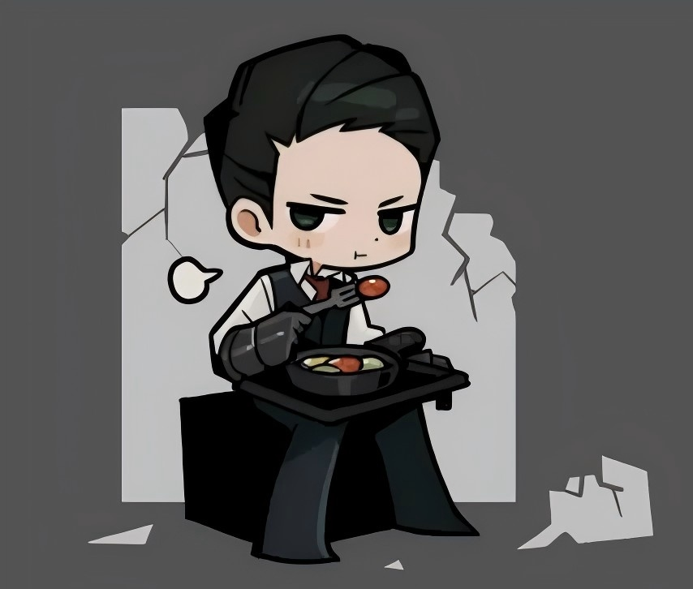 |
| 异想体是源于人类潜意识中的原型，其本质仍为“人”。大多数异想体都有着与人类或动物截然不同的外观和异想天开的能力，且有着独一无二的内在特征。异想体不会死亡。每当以适当的方式进行镇压，异想体就会被还原至卵模样的核心，一段时间后再次孵化。其危险等级分为ZAYIN、TETH、HE、WAW、ALEPH五级，依据攻击性、出逃能力及受害规模划分。 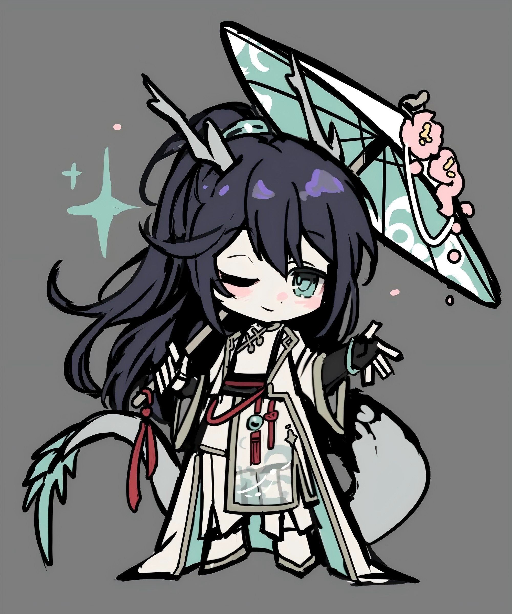 |
| 都市是《边狱巴士》中由26个区组成的人类聚居地，总人口约64亿，由A、B、C公司组成的“首脑”体系实行高压统治。都市分为巢、后巷、郊区和废墟：巢是各大公司（“翼”）管辖的安全区，居民须遵守严苛禁忌并缴纳高额税金；后巷是巢之外的贫民地带，帮派“手指”主导秩序；郊区与废墟则极度危险，遍布怪物与未知。各巢文化与科技千差万别，但均受首脑支配。 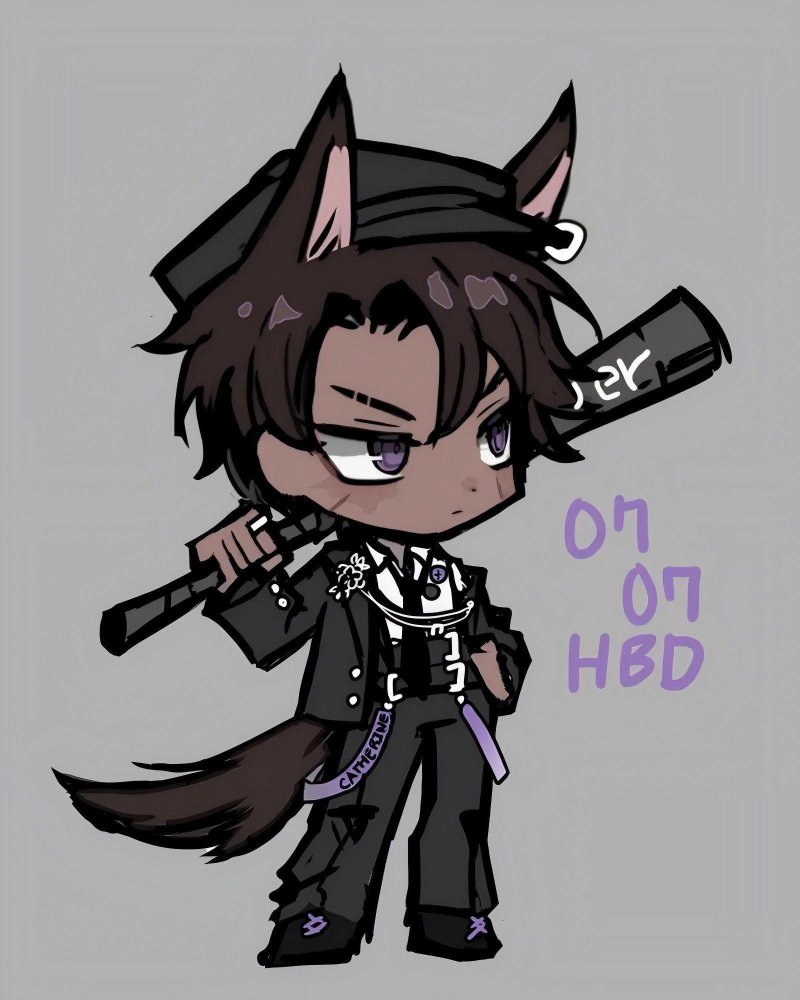 |
| “世界之翼”，掌管巢的26个超大型企业的统称，是该片区块上坐拥最尖端也最具影响力的技术的公司。每片翼都有着被称作奇点的惊人技术，翼依靠奇点技术带来的盈利以及高到荒谬的税收管理自身所在巢。翼之间常常会保持良好关系，进行双向合作，从而拓展自身的技术应用范围。翼有着独属于自己的文化风格、社会结构和禁忌，这也体现在其管理的巢中。大部分翼的建筑风格与周边的翼类似，也有部分例外。巢与后巷有十分鲜明的界限，为了防止后巷的人进入巢中，各个巢都会使用一定的手段。各翼都全力保护自身奇点科技的真实信息，以免将其暴露给竞争对手或其他力量。翼折断后，其管理的巢基本会沦落至与后巷无异，被各种势力争抢，折翼之羽也会失去庇护，直到新的翼长成。 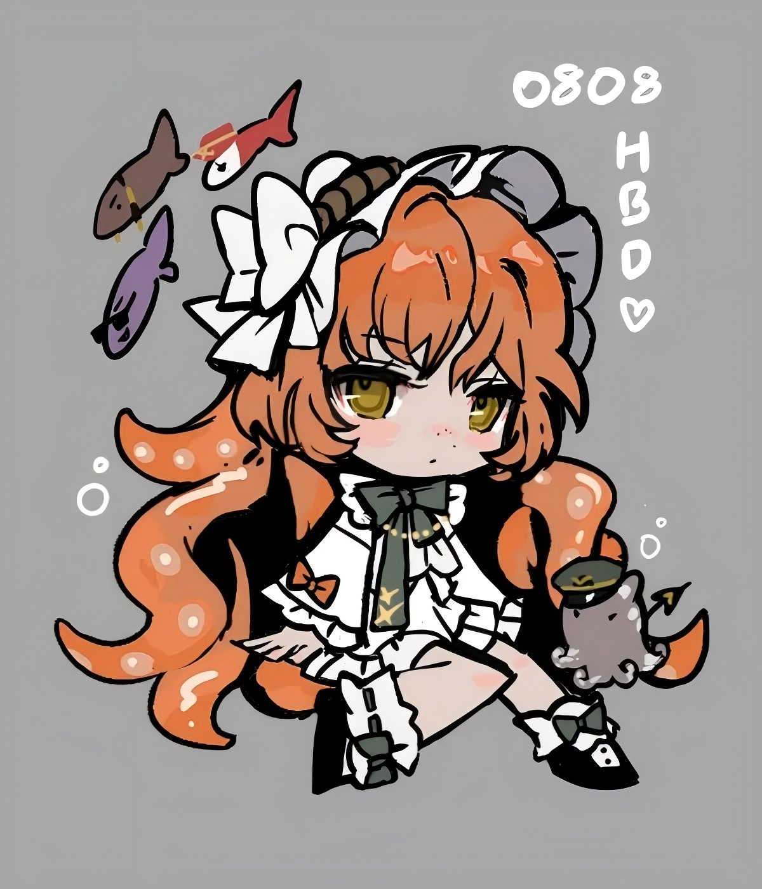 |
| 以总辖都市中所有收尾人的하나协会为主轴，管理收尾人的巨大团体被称作协会。一般在都市中发生的事件会根据各个协会的特性进行适配，再由协会将任务分配给收尾人。协会是按照都市需要的顺序来设立的。 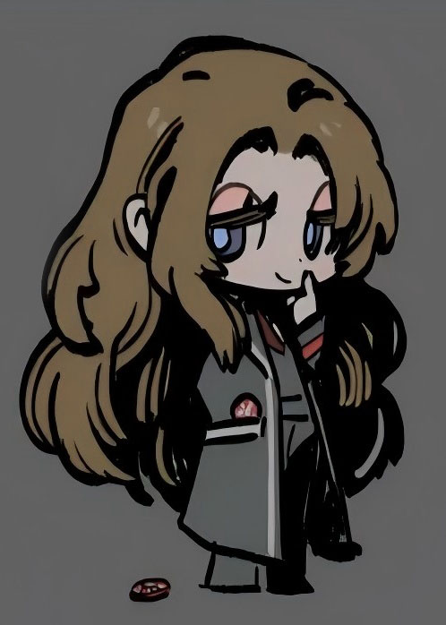 |
| 事务所是由收尾人创建的企业或是事业单位，分为1阶到9阶。事务所等级由하나协会管理。由于收尾人的工作涉及方方面面的多个领域，事务所也有着各式各样的分类。收尾人若想承接委托，即使并未创立庞大的企业，也需要遵循规定，成为各类被授权团体中的一员，或建立一家只有自己的“一人事务所”。事务所的领导者一般被称作代表，通常需要负责事务所大大小小的各类事务。为了能在市场里被选中，事务所通常会用某些手段吸引客户。例如举办活动，或者另辟蹊径地招募成员。 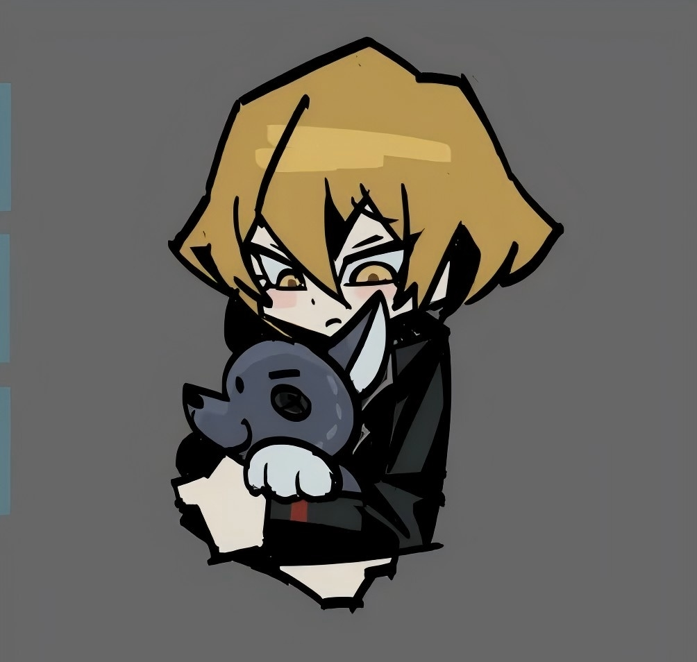 |
| 帮派是在都市各处聚集成一股股势力的团体的统称。由于帮派一词的指代范围过于庞大，所以比起说是有什么特别的标准，倒不如说基本上只要以团队行动就能被称为帮派。帮派里存在不少谋财害命，坏事做尽的家伙，但剩下的就和普通收尾人没什么区别。他们有时还会接受委托，帮人解决问题。甚至有着因为收尾人的约束太多，而且考取执照要准备很多东西，因此选择组建帮派来消灭其他帮派。收尾人们也时常会跟帮派合作，共同处理案件。一个帮派就算爬得再高再远，办起事来都不能脱离五指的管束。 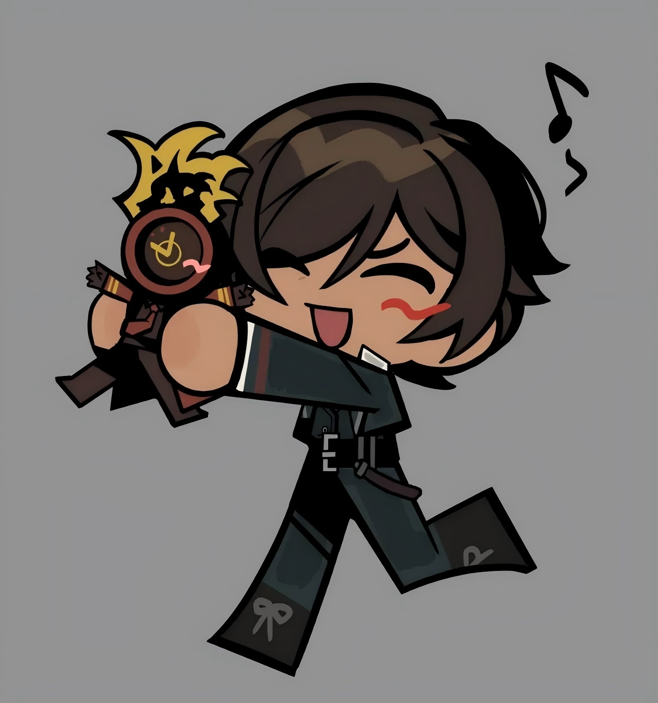 |
| FACE THE SIN-SAVE THE EGO 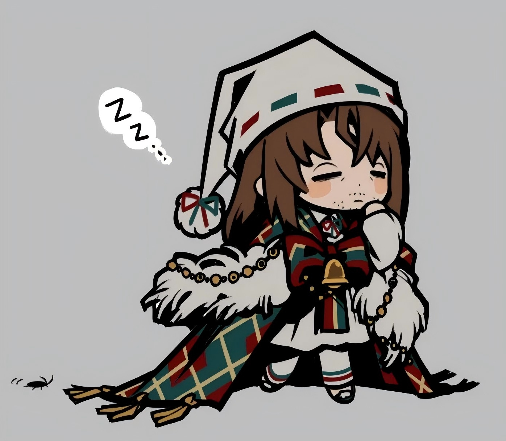 |